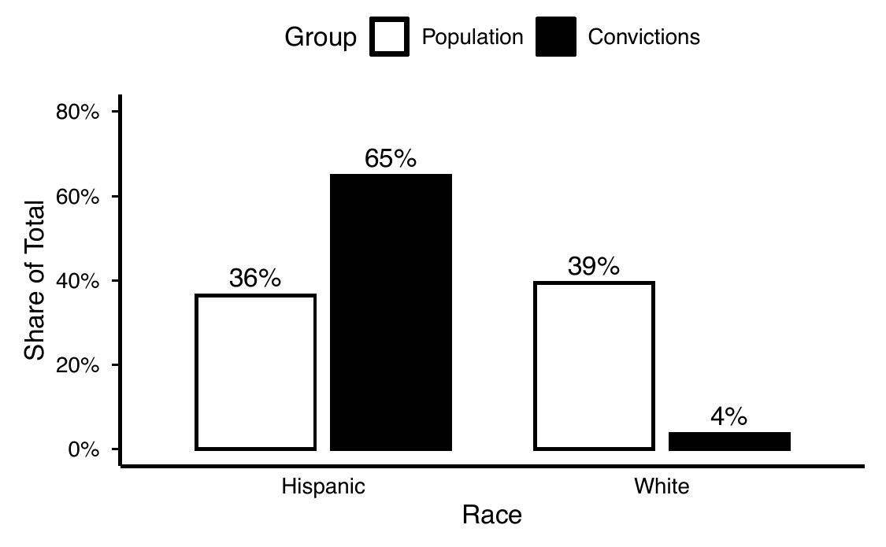

Expert Witness
California Racial Justice Act
I provide statistical analysis and expert testimony for California Racial Justice Act claims under Penal Code § 745(a)(3) and (a)(4).
I have worked on seven RJA claims across five counties, providing expert statistical analysis for a county public defender's office, an independent defense attorney, a law school racial justice clinic, and a nonprofit legal organization. Courts in Kern and Los Angeles Counties have approved funding for my services as a defense expert.
In collaboration with the Office of the State Public Defender, I led technical development of the RJA Disparity Screener, a website that generates court-ready reports on post-conviction racial disparities.

If you are working on an RJA case and want to know whether a statistical analysis is feasible, I'm happy to talk it through. Get in touch.